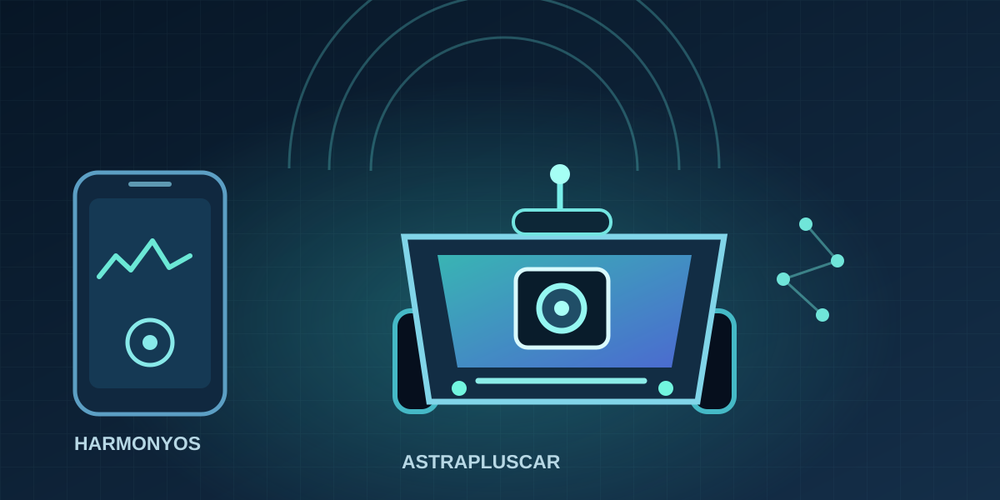

Device and chassis
The device manages the camera, lidar, and control loop. It sends high level actions over serial to the ESP32, which handles motors, servos, and other hardware.
A smart vehicle built across sensors, device software, and a phone interface. The device gathers camera and lidar data and controls the chassis through an ESP32; a HarmonyOS app previews the camera and sends driving commands over the local network.

The project has two independent repositories. The device side runs on the Orange Pi AI Pro / Ascend environment and handles sensors, vehicle control, and the HTTP API. The phone side uses ArkTS for the driving interface. Earlier device code also contains lane following and object tracking experiments.
The device manages the camera, lidar, and control loop. It sends high level actions over serial to the ESP32, which handles motors, servos, and other hardware.
The HarmonyOS app offers camera preview, lidar status, direction controls, speed adjustment, stopping, and photo capture.
The device ships with three behaviour modes, all switchable by external command; a manual mode is also provided for direct control.
Loads an offline YOLOv5 model to recognise left-turn, right-turn and U-turn signs, triggering the corresponding in-place turn based on the detection centre and area thresholds.
A regression network outputs a single steering value for each frame, which is mapped in segments to forward, turn-left or turn-right so the vehicle follows the lane marking.
Speed is adjusted by the size of the target box, steering follows the direction the target deviates from the frame centre, and the vehicle stops once it closes to a threshold distance.
Keyboard control of forward, back, left, right, in-place rotation and sideways movement, with speed adjustment, stopping and frame capture available at any time.
Phone and vehicle share a WLAN. The phone sends high level commands; the device confirms and executes them, then drives the ESP32 over serial. Camera and lidar data flow back to the interface.
The device side is built on Huawei’s official E2E sample, with an unmodified copy kept alongside for comparison.
The original project is byte-identical to the official sample. An earlier modification added a structured-light camera and tested 1920×1080 capture. Current phone integration uses the capture, preview and snapshot sizes described below; the earlier camera experiment does not describe current runtime settings.
Recognition runs on the board using Ascend offline models, covering sign detection, lane-following regression and target tracking, with both pre- and post-processing included in the project.
Includes an RPLIDAR test project built on ROS2, used to collect point clouds and verify the mapping pipeline.
Ships with training and export code for the lane-following model, a lane-marking auto-labelling tool, and a separate ESP32-based vehicle firmware with a Chinese tutorial.
The HarmonyOS application offers two layouts: portrait shows connection status, video, the lidar bar and the control pad in sequence; landscape lets the video fill the screen with joysticks and lidar bands overlaid.
Bounded short MJPEG segments provide continuous preview with measured decode FPS: capture is 720p / 30 FPS, driving preview is 640×360, and snapshots retain 720p. Three-way radar shows the nearest valid echoes; missing or stale readings do not indicate a safe distance.
The four main directions are forward, turn left, back and turn right; the corners handle rotation and sideways movement. Only one action is active at a time while held, and sliding to a new direction stops first. The speed slider stays usable during movement.
After 2 seconds without a fresh frame, the phone disconnects control and sends stop. A previously active video connection can recover up to three times at 0.5, 2 and 4 seconds; initial connection failures do not loop, and backgrounding or disconnecting cancels recovery. Motion and speed stay blocked until fresh frames arrive; old actions are never replayed. The independent 600 ms watchdog remains active. Voice and model modules show offline, and periodic wireless stalls remain unresolved.
Screenshots are stored on the vehicle first, then downloaded into the app’s private gallery where they survive restarts. Images only reach the system album after the user explicitly downloads them and grants permission.
Phone and vehicle have been integrated on the same WLAN, confirming video, three-way radar, snapshots and the private gallery. API checks cover movement commands, renewal, stop and rejection of old sessions. Later records add three recovery attempts and background cancellation. Periodic wireless stalls remain unresolved; wheel direction and ground driving still require observation.